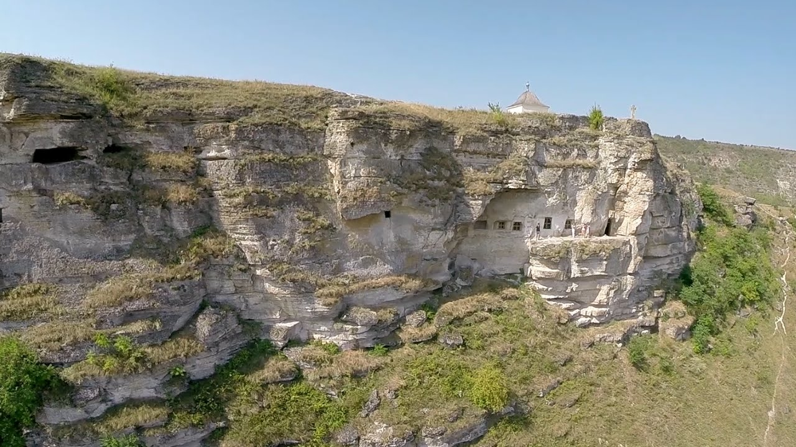
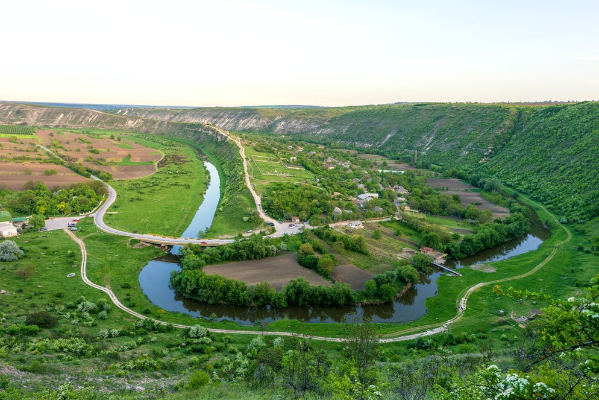

Old Orhei (Romanian: Orheiul Vechi) is a Moldovan historical and archaeological complex located in Trebujeni, which is approximately 60 kilometres (37 mi) north-east of Chişinău on the Răut River in the Republic of Moldova. The ancient city of Orheiul Vechi is a natural and historical complex, located in a narrow bend of the Raut River. The natural landscape of limestone rock, eroded by the river, is combined with archaeological vestiges of the ancient Trypillian civilization. As a result of archaeological excavations, cultural layers were discovered from different epochs, such as the Paleolithic, Eneolithic, and Iron Age. Old Orhei contains traces of different civilizations, including the remnants of earthen and wooden fortresses of Geto-Dacian fortress (6th-1st centuries B.C.), the Golden Horde fort Shehr al-Jedid (or Yangi-Shehr) (14th century), a Moldavian fort dating from the 14th-16th centuries, an Orthodox monastery (c 14th century), and the Moldavian town of Orhei from the 14th-16th centuries. The Orthodox monastery is still inhabited by a handful of Orthodox monks, who maintain the church at the top of the hill. The caves are still functional as chapels. The caves contain an array of historical artifacts and Old Church Slavonic inscriptions dating from the 1690s, which testify that the Hajduk took shelter in the caves, hiding from the Ottoman Empire.

